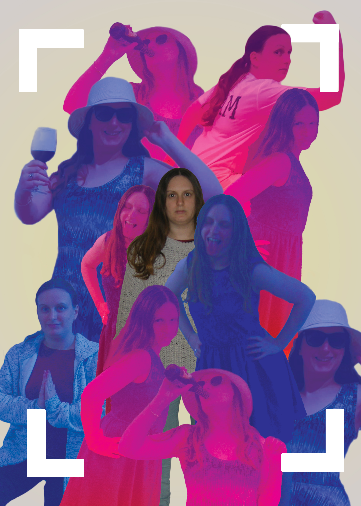

Final Project
As part of the project, we were asked to create a poster inspired
by a famous painting. I chose the painting "Self Portriat with Masks"
by the artist James Ensor. My current interpersonal interpretation
was social networking and how we all "wear masks" when we use them.

by a famous painting. I chose the painting "Self Portriat with Masks"
by the artist James Ensor. My current interpersonal interpretation
was social networking and how we all "wear masks" when we use them.